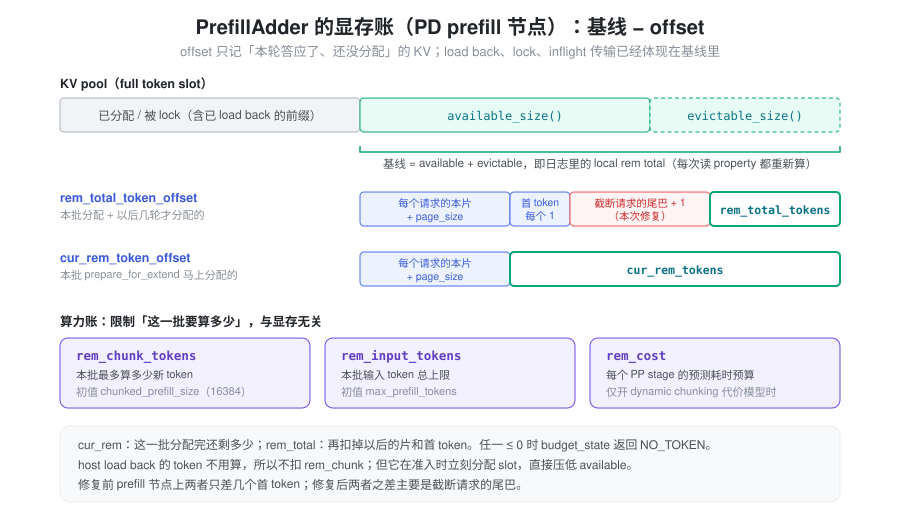
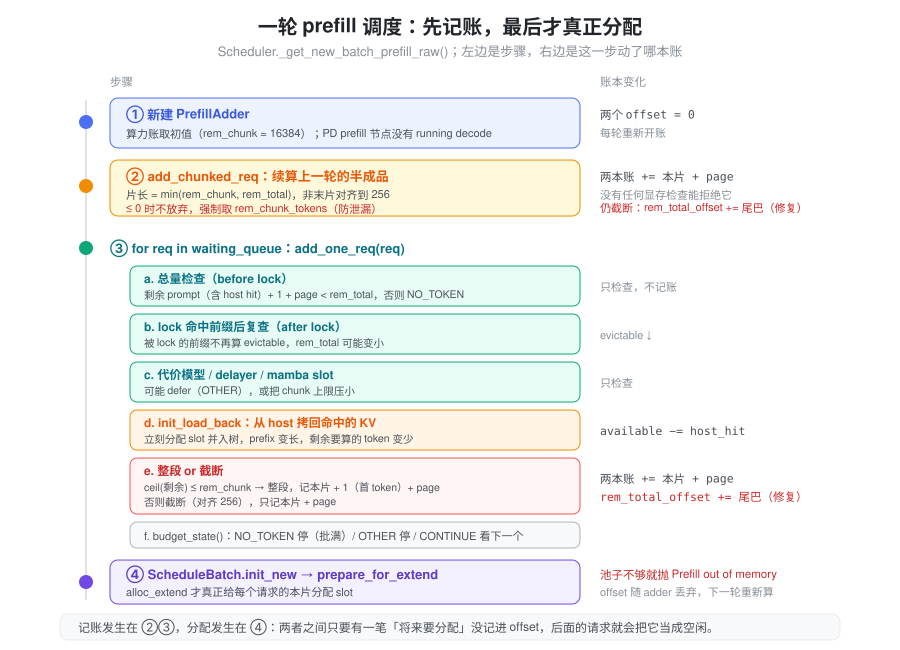
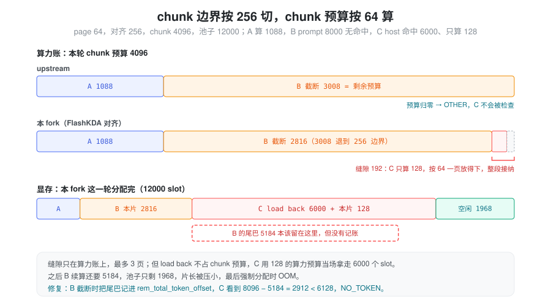
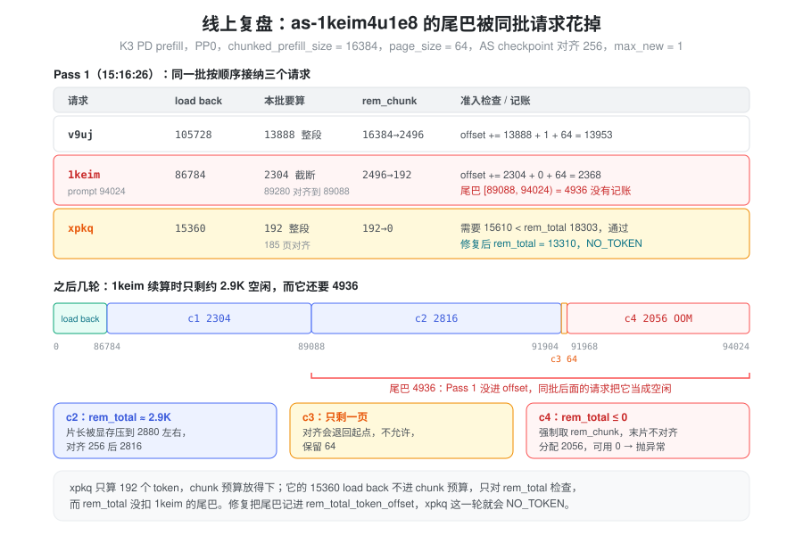

本文只讨论 PD 分离的 prefill 节点。这里的请求只做 prefill、生成首 token，算完就把 KV 传给 decode 节点，不会留在本节点做 decode。所以下文不涉及 decode 阶段的显存预留。
问题：准入检查说“装得下”，几轮之后却 OOM
2026-11-02，线上 Kimi-K3 PD 分离的 prefill 节点（PP0）抛出：
Prefill out of memory. Try to lower your batch size.
Try to allocate 2056 tokens.
Available full tokens: 0 (full_available_size=0 + full_evictable_size_=0)出错的请求 as-1keim4u1e8
在两轮之前就已经通过了准入检查。检查时，它的整段
prompt（94024 token）加上首 token
是放得下的。它被切成几片，前几片都跑完了，最后一片 2056 个
token 却拿不到显存，scheduler 进程直接退出。
“接纳时检查过、后面还是不够”，说明问题不在检查本身，而在检查之后的记账：调度器答应给这个请求的显存，有一部分没有记下来，被同一批里后面的请求当成空闲用掉了。要讲清楚这件事，得先讲清楚调度器记的是什么账，以及
rem_total_tokens 这类变量各自是什么意思。
抽象：实时余量，减去“答应了还没分配的”
组一个 prefill batch 时，PrefillAdder
不会边接纳边分配显存。它先按顺序决定接纳谁、每个请求本批算多少，最后由
prepare_for_extend 统一分配 KV
slot。在“决定”和“分配”之间，它靠记账防止同一轮里后面的请求超卖前面的请求。账有两类：
- 算力账：这一批要算多少新 token？ 管单次
forward 的规模，只关心需要经过模型计算的 token。主要是
rem_chunk_tokens。 - 显存账：KV pool 给得起吗？ 管 KV slot
够不够，关心的是将来要占多少 slot。对应
rem_total_tokens和cur_rem_tokens。
显存账是一个减法：
还能答应的 = 基线（空闲 slot + 可驱逐的前缀） − offset（本轮已经答应、但还没分配的 KV）
基线从 allocator 和 radix tree 实时读取，已经发生的分配会直接体现在里面。offset 由 adder 自己累加。本轮答应出去的 KV 按兑现时间分成两部分：
- 本批分配：这一批
prepare_for_extend马上要拿走的，也就是每个请求的本片。 - 以后分配：本轮答应了、要到以后的轮次才分配的。在 prefill 节点上只有两样：整段接纳请求的首 token（每个 1），以及被截断请求剩下没算的那段（下文叫“尾巴”）。
cur_rem_token_offset
只记前者，rem_total_token_offset
两者都记。尾巴在两边都没有记：它不在本批分配，也没进
rem_total_token_offset。upstream
也是这样，但以前不会出事，因为另有一条规则保证尾巴没人能抢。本
fork 的 FlashKDA checkpoint
对齐让这条规则失效了，下文“根因”一节会讲清楚。

两本账互相独立。命中 host 上大段前缀的请求，要算的新 token 只有几百，却要把上万 token 的 KV 从 host 拷回 GPU。它在算力账上几乎不花钱，在显存账上花很多。显存账只要漏记一笔，这种请求最容易钻空子。
变量到底是什么意思
以下变量都在
PrefillAdder（srt/managers/schedule_policy.py）里。K3
用的是 KDA + MLA 混合模型，走
is_hybrid_ssm_cache 分支，可驱逐量取的是
full_evictable_size()。
显存侧
在 prefill 节点上，三个量的关系可以直接写出来：
基线 = available_size() + full_evictable_size()
cur_rem_token_offset = Σ 本批每个请求的（本片 + page_size）
rem_total_token_offset = cur_rem_token_offset
+ Σ 整段接纳请求的首 token（每个 1）
+ Σ 截断请求的（尾巴 + 1） ← 本次修复
cur_rem_tokens = 基线 − cur_rem_token_offset # 这一批分配完还剩多少
rem_total_tokens = 基线 − rem_total_token_offset # 再扣掉以后一定要用的，还剩多少| 变量 | 含义 | 怎么变 |
|---|---|---|
available_size() |
KV pool 此刻的空闲 slot | 任何分配/释放立即反映，包括准入过程中的
init_load_back |
full_evictable_size() |
radix tree 里 lock_ref == 0、可以驱逐腾出的
slot |
请求 lock 住命中前缀后，这部分就不再可驱逐 |
cur_rem_token_offset |
本批分配 | 每接纳一个请求加 本片 + page_size |
rem_total_token_offset |
本批分配 + 以后分配 | 整段接纳加 本片 + 1 + page_size；截断加
本片 + page_size，修复后再加
尾巴（页对齐） + 1 |
cur_rem_tokens /
rem_total_tokens |
基线减去对应 offset | property，每次读都重新算；可以是负数 |
rem_swa_tokens /
rem_mamba_slots |
SWA 池、mamba state slot 的同类账 | 只在对应模型上生效，本文不展开 |
几点容易误解的地方：
rem_total_tokens不是“池子里剩多少”。 日志里同时打印了两者：local rem total是基线，current rem_total_tokens是扣掉 offset 之后的值，两者之差就是rem_total_token_offset。cur_rem_tokens总是不小于rem_total_tokens。cur_rem_token_offset的每一项都包含在rem_total_token_offset里。所以起拦截作用的几乎总是rem_total_tokens，cur_rem_tokens是防御性的下限。- 修复前，prefill 节点上两本账几乎重合。
“以后分配”的部分只有首 token，每个请求 1。线上那一轮
rem_total_tokens = 18303、cur_rem_tokens = 18304，只差v9uj的首 token。rem_total_tokens本该表示“还能答应多少”，实际上退化成了“这一批分配完还剩多少”。修复后，两者之差主要就是尾巴。 - 每轮重新开账。
PrefillAdder每一轮调度新建一次，两个 offset 从 0 开始，组完 batch 就整个丢弃。offset 只在同一轮内防止后面的请求超卖前面的请求，跨轮的状态都落在基线里。
基线里已经有的，不进 offset
| 事件 | 对基线的影响 |
|---|---|
init_load_back() 拷回 host 命中的 KV |
当场分配 slot，空闲量立刻减少 |
| lock 住 device 命中的前缀 | 这段前缀不再可驱逐 |
| 上一轮算完、正在把 KV 传给 decode 的请求 | 一直占着 slot，传完才释放，下一轮的基线随之上升 |
| 上一轮半成品已经算完的前几片 | 已经分配，并且被 lock 住 |
这些占用已经体现在基线里，再记进 offset 就会重复扣。offset 只记一件事：本轮已经答应、但还没分配的 KV。
算力侧
| 变量 | 含义 | 初值 |
|---|---|---|
rem_chunk_tokens |
本批最多算多少新 token | chunked_prefill_size（K3 线上 16384） |
rem_input_tokens |
本批输入 token 总上限 | max_prefill_tokens（K3 线上
512K，基本不起作用） |
rem_cost |
每个 PP stage 的预测耗时预算 | 只在 --enable-dynamic-chunking 且 PP > 1
时启用。K3 线上设置了
SGLANG_DYNAMIC_CHUNKING_COST_MODEL=1，但没开
--enable-dynamic-chunking，所以这次没生效 |
请求侧
| 字段 | 含义 |
|---|---|
prefix_indices |
已经在 GPU KV 里的前缀（device 命中，或上一片算完 stash 进来的） |
host_hit_length |
前缀里命中在 host（AttentionStore）上、还需要 load back 的长度 |
full_untruncated_fill_ids |
完整输入；len(...) − len(prefix_indices)
是还没进 GPU 的部分 |
extend_range |
本批要算的区间
[start, end)；end < len(full)
就是被截断了 |
budget_state()
的三个返回值
每接纳一个请求后，adder 用 budget_state()
决定还要不要继续看下一个：
NO_TOKEN：rem_total_tokens ≤ 0或cur_rem_tokens ≤ 0（以及 SWA / mamba 的同类条件）。显存不够了，scheduler 会把running_batch.batch_is_full置为 True。OTHER：显存还够，但rem_input_tokens、rem_chunk_tokens或rem_cost用完了。这一批算力满了。CONTINUE：继续看下一个请求。
调度：一轮 prefill 里谁先记账、什么时候真正分配

Scheduler._get_new_batch_prefill_raw()
每轮按下面的顺序走：
- 新建
PrefillAdder。 算力账取初值，两个 offset 从 0 开始。 - 续算上一轮的半成品。 如果
Scheduler.chunked_req不为空，先调add_chunked_req()。片长取min(rem_chunk_tokens, rem_total_tokens)，显存紧时片长会被压小；非最后一片再对齐到 checkpoint 边界。这里没有拒绝的选项：半成品已经占着req_to_token行和前缀 KV，丢下它会泄漏。所以当rem_total_tokens ≤ 0时，代码会把片长强制设成rem_chunk_tokens，照样塞进 batch。 - 从 waiting queue 依次
add_one_req()。 每个请求要过几道关：- 总量检查：
剩余 prompt（含 host hit）+ 1 + page_size < rem_total_tokens，否则NO_TOKEN。这里用的是请求全部剩余长度，因为它以后的每一片都要从同一个池子里拿 slot。 - lock 后复查：lock
住命中前缀后，这部分不再可驱逐，
rem_total_tokens可能变小，要再查一次。 - 代价模型、prefill delayer、mamba slot 等可选检查。
- load back：如果前缀命中在 host
上，
init_load_back()立刻把这段 KV 拷回 GPU。它当场分配 slot，所以直接压低基线，不经过 offset。load back 之后前缀变长，剩下要算的 token 变少。 - 整段或截断：剩余要算的（页对齐后）≤
rem_chunk_tokens就整段接纳，记本片 + 1 + page_size；否则截断成新的半成品，只记本片 + page_size。 budget_state()：返回非CONTINUE就停止接纳。
- 总量检查：
- 真正分配。
ScheduleBatch.init_new()之后，prepare_for_extend()→alloc_for_extend()给每个请求的本片分配 slot。池子不够就抛Prefill out of memory。
几个与本次问题直接相关的设计：
- load back 只占显存，不占算力。 拷回来的
KV 在本次 forward 里是 prefix，不参与计算，所以不扣
rem_chunk_tokens。它也不需要进 offset，因为它在准入时就已经真实分配了，基线里看得到。 - 一批里最多一个半成品。 截断意味着这一批的 chunk 预算用完了，正常情况下后面的请求也进不来。
- 非最后一片的结束位置对齐到 256。 这是 FlashKDA 的 checkpoint 要求，详见下一节。
根因：chunk 边界按 256 切，chunk 预算按 64 算
前提：尾巴原本靠什么保护
chunked prefill 的 KV 是每轮按本片分配的。一个 1M 的请求不会一开始就占住 1M 个 slot：准入时按全长检查一次，然后每轮只分配本片。准入检查和 offset 都不占 slot，offset 本轮结束就丢弃。
那后面几片靠什么保证有显存？upstream 靠的是调度顺序：
- 请求被截断时，截断片正好用完剩下的 chunk
预算，
budget_state()返回OTHER，本轮不再接纳别人。 - 之后每一轮，
add_chunked_req()最先执行，又用光 chunk 预算，scheduler 跳过 waiting queue（skip_waiting_admission）。 - 只有最后一片不截断，剩下的预算才留给后面的请求。这时它已经没有尾巴了。
所以从准入到最后一片之间，没有新请求能插进来分配 KV。尾巴虽然没记账，但没人能抢，这是一种隐式预留。它成立的条件是：截断 ⇒ chunk 预算归零。
两个粒度
| 粒度 | 来源 | 管什么 |
|---|---|---|
| 64 | --page-size 64 |
GPU KV pool 的分配单位。显存账、chunk 预算、准入检查都按它取整 |
| 256 | AS_BLOCK_SIZE（mem_cache/storage/asradix/types.py） |
AttentionStore 的 block，也是 KDA 状态做 checkpoint 的位置 |
KDA 是线性
attention，片与片之间要传递递推状态。这个状态只在 AS block
边界上存 checkpoint，片在 block
中间结束的话，那个位置的状态既写不进
AttentionStore，也没法被后面的请求当前缀复用。所以 FlashKDA
下，Scheduler._get_prefill_checkpoint_end_align_size()
返回 256，_align_chunk_extend_end()
把非最后一片的结束位置向下对齐到 256
的整数倍。最后一片不对齐。这条规则来自
a39f854b5e（luno-5416）。它只要求
256 % page_size == 0，所以每个 256
边界也是页边界，GPU 侧的分配仍按 64 进行。
256 只决定片在哪里结束，不改变显存账：一片被对齐成 2816，它就占 2816 个 slot，按 64 一页记账。粒度不一致出现在算力账上：片长按 256 缩短了，chunk 预算却只扣掉实际取走的部分，剩下不到一个 AS block 的零头；后面的请求又按 64 一页去用这点零头。
一个简单的例子
page 64，对齐 256，chunk 预算 4096，池子里 12000 个空闲 slot，可驱逐量为 0。为了好算，忽略每个请求额外的那一页。waiting queue 里依次是：
- A：要算 1088，没有命中。
- B：prompt 8000，没有命中，要分好几轮算。
- C：前缀 6000 命中在 host 上，只需要算 128 个新 token。

upstream（没有 256 对齐）：
- A 整段接纳，chunk 预算 4096 → 3008。
- B 准入检查按全长：8000 < 12000 − 1088，通过。剩余 8000 > 3008，截断。截断长度按页向下取整，3008 本来就是 64 的倍数，本片就是 3008，chunk 预算 → 0。
budget_state()返回OTHER，本轮结束。C 根本不会被检查。
B 的尾巴 4992 没有记账，但也没人能抢：之后每一轮 B 都最先续算，又把 chunk 预算用光，直到最后一片。准入时按全长检查过的那部分显存，就一直留给 B。
本 fork（256 对齐）：
- A 整段接纳，chunk 预算 4096 → 3008。
- B 准入检查通过，截断。结束位置 3008 不是 256 的倍数，退到 2816，本片 2816。chunk 预算只扣 2816，3008 → 192。
budget_state()返回CONTINUE，继续看 C。- C 只需要算 128 ≤ 192，按 64 一页的口径放得下，走整段接纳。显存检查：6128 < 12000 − 1088 − 2816 = 8096，通过。这个余量里还包含 B 的尾巴 5184。
- C 的
init_load_back()当场分配 6000 个 slot。
这一轮分配完，池子只剩约 12000 − 1088 − 2816 − 6128 =
1968，B 还需要 5184。之后几轮 B 的片长被显存压小，余量降到 0
后 add_chunked_req() 强制分配，OOM。
为什么缝隙只有 192，却能造成几千的缺口
缝隙在算力账上，最多 3 页。如果从缝隙进来的是一个普通小请求，它最多多占 192 + 1 + 64 个 slot，影响不大。但 host load back 不占 chunk 预算：C 只用了 128 的 chunk 预算，却在准入时当场拿走 6000 个 slot。算力上的几页零头，变成了显存上的几千个 slot。
所以这次 OOM 要三件事同时成立：
- 截断后还剩 chunk 预算。 256 对齐缩短了片长，而 chunk 预算按 64 剩下零头。片的结束位置（前缀长度 + 剩余 chunk 预算）恰好是 256 的倍数时，不会留下缝隙。
- 截断请求的尾巴没有记账。 upstream 一直如此，以前靠“截断就把 chunk 预算用光”兜底。
- 有一个算力小、显存大的请求从缝隙进来。 host load back 正好是这种请求。
add_one_req() 截断分支的注释写着 “Checkpoint
alignment can leave a few pages after a partial admission.
They may fit a final
request”：代码作者知道有缝隙，也有意让它被整段请求用掉，只禁止了第二个半成品。缺的是第
2 条：没人想到尾巴原本是靠“chunk 预算用光”保护的。
线上复盘：as-1keim4u1e8
的尾巴被同批请求花掉

PP0 在 15:16:26 组的一批里依次接纳了三个请求（日志
68297–68315
行）。它们和上面的例子一一对应：v9uj 是
A，1keim 是 B，xpkq 是 C。
| 请求 | load back | 本批要算 | rem_chunk_tokens |
记账 |
|---|---|---|---|---|
v9uj |
105728 | 13888（整段） | 16384 → 2496 | offset += 13888 + 1 + 64 = 13953 |
1keim（prompt 94024） |
86784 | 2304（截断） | 2496 → 192 | offset += 2304 + 64 = 2368 |
xpkq |
15360 | 192（整段，185 页对齐） | 192 → 0 | offset += 192 + 1 + 64 |
逐个看：
1keim的准入检查是按全长做的。94024 + 1 + 64 = 94089 < 94463，通过。load back 之后只剩 7240 要算，chunk 预算只剩 2496，于是截断。结束位置86784 + 2496 = 89280不是 256 的倍数，退到 89088，本片 2304。chunk 预算按 64 剩下 192，尾巴[89088, 94024)共 4936 个 token 没有进 offset。xpkq从缝隙里进来。 它只需要算 185 个 token，页对齐后 192，正好等于缝隙，走整段分支。显存检查用的是没扣尾巴的rem_total_tokens，通过后它把 15360 个 token load back 进了 GPU，当场分配。1keim之后几轮被显存卡住。 下一轮它照样最先续算，调度顺序没有问题，但 slot 已经被xpkq实际占走。按 AS write 的 block 数和对齐规则推算，它后续三片是：- c2
[89088, 91904)2816：显存只剩约 2.9K，片长被rem_total_tokens压小，再对齐到 256。 - c3
[91904, 91968)64：只剩一页。对齐会退回起点，_align_chunk_extend_end()不允许，保留 64。 - c4
[91968, 94024)2056：rem_total_tokens ≤ 0，add_chunked_req()走强制分支取rem_chunk_tokens，最后一片不对齐，按 2056 去分配。池子是 0，抛异常。
- c2
2816 + 64 + 2056 = 4936，正好是那段没记账的尾巴。
接纳 xpkq 之前，基线是 34624（日志里的
local rem total）。把两本账展开：
| 修复前 | 修复后 | |
|---|---|---|
cur_rem_token_offset |
(13888 + 64) + (2304 + 64) = 16320 | 16320 |
rem_total_token_offset |
16320 + 1（v9uj 首 token）= 16321 |
16321 + (4992 + 1)（1keim 尾巴）=
21314 |
cur_rem_tokens |
18304 | 18304 |
rem_total_tokens |
18303 | 13310 |
xpkq 需要 15545 + 1 + 64 = 15610 |
通过 | NO_TOKEN |
cur_rem_tokens 修复前后都是
18304：只看本批分配，xpkq
确实放得下。能拦住它的只有记了尾巴的
rem_total_tokens。拦下之后，这 15360 个 slot
就留给了 1keim。
c2、c3 的区间是从 AS write 的 block 数（348 → 89088，359
→ 结束在
[91904, 92160)）加对齐规则推出来的，日志里没有直接打印每片的区间；“约
2.9K 空闲”也是推算值。正在把 KV 传给 decode 的 inflight
请求也占着显存，它们已经体现在基线里，这几轮里不会新增占用。
修复：截断时把尾巴记进
rem_total_token_offset
两种修法
根因里的三个条件，堵住第 1 条或第 2 条都能避免这次 OOM：
| 截断后停止接纳（堵第 1 条） | 把尾巴记进显存账（堵第 2 条，采用） | |
|---|---|---|
| 做法 | 截断后把 rem_chunk_tokens 清零或返回
OTHER |
截断时
rem_total_token_offset += 尾巴 + 1 |
| 修的是 | 恢复“截断 ⇒ chunk 预算归零”这个间接保证 | 显存账本身，不再依赖算力账有没有用完 |
| 对齐缝隙 | 浪费掉，每批最多 192 个 token 的算力 | 显存够的话仍然可以用 |
| 其他原因留下的缝隙 | 要逐个堵 | 都不影响 |
| 和截断分支注释的意图 | 相反（注释希望缝隙能放进一个整段请求） | 一致 |
“其他原因”是实际存在的：截断分支里还有一条
truncation_align_size 路径（flashinfer
确定性推理用），它把截断长度向下对齐到 split
size，同样会剩下 chunk 预算。
采用后者的理由是两本账各管各的：算力账管这一批算多少，显存账管 slot 够不够。显存安全不应该依赖算力账恰好用光。
实现
修复只补上漏记的那一笔：请求被截断时，把它的尾巴（页对齐）和首
token 记进 rem_total_token_offset。
def _reserve_unscheduled_tail(self, *, tail_len: int, max_new_tokens: int):
if tail_len <= 0:
return
self.rem_total_token_offset += self.ceil_paged_tokens(tail_len) + max_new_tokensmax_new_tokens 在 prefill 节点上就是首 token
的
1。截断片原来不记它，现在跟着尾巴一起记，口径和整段接纳一致。只记
rem_total_token_offset、不记
cur_rem_token_offset，是因为尾巴要在后面几轮才分配，不是这一批
prepare_for_extend 要拿走的。
调用点有两处：
add_one_req()的截断分支：新请求第一次被切开。add_chunked_req()续算后仍然截断：半成品还有下一片。这里只在决策侧（planned_admission is None）记账。PP 下 PP0 决定接纳计划，其余 rank 按计划重放；重放 rank 的本地余量可能和 PP0 不同，在那边多扣一笔，可能让它拒掉 PP0 已经接纳的请求，导致各 stage 的 batch 不一致。
修复不会多占显存，截断请求本身也不会因此被多拒，因为它被接纳时已经按全长检查过。修复只让同一轮里排在后面的请求不能再把尾巴当成空闲。在上面的例子里，B
截断后 rem_total_tokens 变成 8096 − 5184 =
2912，C 需要 6128，返回 NO_TOKEN，6000 个 slot
留给了 B。
多拒的请求只出现在两个条件同时成立时：截断后还剩 chunk 预算，并且剩余显存放不下“尾巴 + 新请求”。后一个条件成立时，放它进来迟早会让半成品 OOM，所以拒绝是对的。显存宽裕时，修复不改变任何行为。
修复的边界：
- offset 只在一轮之内有效。跨轮的保护仍然来自“下一轮先续算半成品”这条既有规则。
- 被拒的请求拿到
NO_TOKEN，本轮不进 batch，scheduler 置batch_is_full，等 inflight 请求传完 KV、显存释放后再接纳。这是用一点首 token 延迟换不 OOM。 add_chunked_req()在余量 ≤ 0 时强制取rem_chunk_tokens的兜底逻辑没有改。更稳的做法是这种情况下本轮先不续算、等显存释放，但这会牵涉 PP 重放的一致性，留作后续。
实现落点
以下路径相对于 python/sglang/。
| 概念 | 代码 |
|---|---|
两本账、budget_state() |
PrefillAdder.__init__、rem_total_tokens
/
cur_rem_tokens、budget_state()（srt/managers/schedule_policy.py） |
| 记账 | PrefillAdder._update_prefill_budget() |
| 尾巴预留（本次修复） | PrefillAdder._reserve_unscheduled_tail() |
| 续算半成品、强制兜底 | PrefillAdder.add_chunked_req() |
| 新请求准入、load back、截断 | PrefillAdder.add_one_req() |
| checkpoint 对齐 | _align_chunk_extend_end()；对齐粒度来自
Scheduler._get_prefill_checkpoint_end_align_size() |
| 组 batch 主流程、跳过 waiting queue | Scheduler._get_new_batch_prefill_raw()（srt/managers/scheduler.py） |
| 真正分配、OOM 报错 | alloc_for_extend() →
alloc_paged_token_slots_extend()（srt/mem_cache/allocation.py） |
单测在
test/registered/unit/managers/test_prefill_adder.py，用
page_size 64、chunk 704、对齐 256
的小规模参数复现了两种情形：
test_truncated_req_tail_blocks_host_load_back_admission：新请求被对齐截断后，一个“要算的很少、要 load back 很多”的请求不能再进本批，而且init_load_back不会被调用。对应线上的xpkq。test_resumed_chunk_tail_blocks_waiting_admission：续算的半成品仍被截断时，它的尾巴同样挡住普通 waiting 请求。
两个用例在修复前都会失败。
小结
根源：chunk 显存切分边界 256 page size 和准入 chunk 准入边界 64 page size 的不匹配
在 prefill 节点上，PrefillAdder
的显存账是“基线减去本轮答应了还没分配的
KV”。截断请求的尾巴从来没有记进这本账，upstream 靠“截断就把
chunk 预算用光、本轮没人能插进来”替它做了隐式预留。FlashKDA
的 checkpoint 要求非最后一片在 256 边界结束，而 chunk
预算和准入检查都按 64 一页计算，于是截断后会剩下不到一个 AS
block 的 chunk 预算，后面的请求可以按 64
的口径整段进来。缝隙在算力上只有几页，但 host load back
不占算力预算，能在准入时当场拿走上万个 slot，这些 slot
正是尾巴需要的。修复把尾巴显式记进
rem_total_token_offset，显存账不再依赖算力账有没有用完，“接纳时装得下”重新等价于“能算完”。